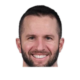

“Kevin Martin got his shot off and he shot it probably a little bit farther down from the hip than Lonzo does. If you're effective out there on the basketball court, you can have an unorthodox shot or movements or whatever. You can still be effective and play good. It's not just his shot, it's just the fact that he has to be confident in his shot, and I think that just comes with repetition.”

What NBA players and coaches have said about Kevin Martin
5 quotes about Kevin Martin from 5 players, coaches and executives, newest first. Each one links to its original source.
Best quotes
Serge Ibaka on the Thunder offseason:
“There will be changes, like the departure of Kevin Martin. We have room for improvement and we have to add something to improve our play.”
Jon Krawczynski:Sam Mitchell on Zach LaVine over Kevin Martin:
“It’s not necessarily about earning, it’s about where you are as an organization and where you’re trying to go. I’m not saying Kevin has to accept it with a smile on his face, but it’s just where we are as an organization.”
What Kevin Martin has said about other players and coaches →
Quotes per season
Who talks about Kevin Martin most

JJ Barea1 quote Kevin Durant1 quote
Kevin Durant1 quote- Milt Newton1 quote
- Sam Mitchell1 quote
 Serge Ibaka1 quote
Serge Ibaka1 quote
2017-18
1 quote“Kevin Martin got his shot off and he shot it probably a little bit farther down from the hip than Lonzo does. If you're effective out there on the basketball court, you can have an unorthodox shot or movements or whatever. You can still be effective and play good. It's not just his shot, it's just the fact that he has to be confident in his shot, and I think that just comes with repetition.”
2015-16
2 quotesJerry Zgoda:Milt Newton on Kevin Martin:
“He's here and we expect him to be a professional and be ready to play when called upon.”
Jon Krawczynski:Sam Mitchell on Zach LaVine over Kevin Martin:
“It’s not necessarily about earning, it’s about where you are as an organization and where you’re trying to go. I’m not saying Kevin has to accept it with a smile on his face, but it’s just where we are as an organization.”
2013-14
1 quoteBarea said, citing Ricky Rubio and Kevin Love.
“We also have Kevin Martin and new guys. Our problem is that we haven't been able to maintain ourselves healthy. If we stay healthy, we see ourselves in the playoffs.”
2012-13
1 quoteSerge Ibaka on the Thunder offseason:
“There will be changes, like the departure of Kevin Martin. We have room for improvement and we have to add something to improve our play.”